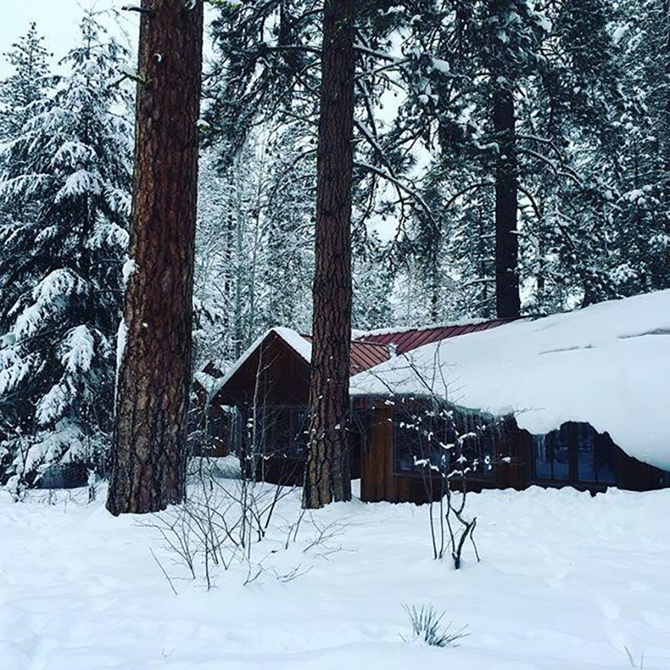
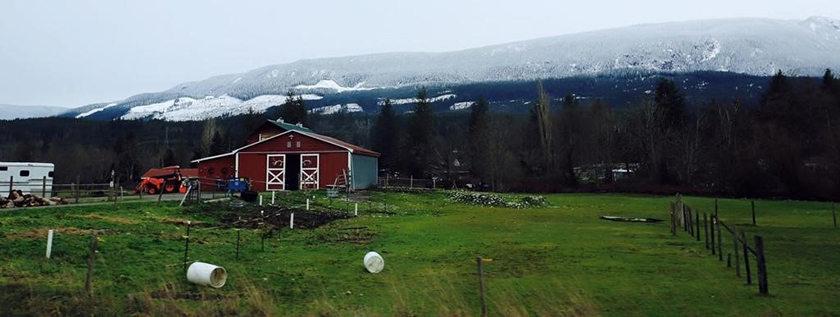
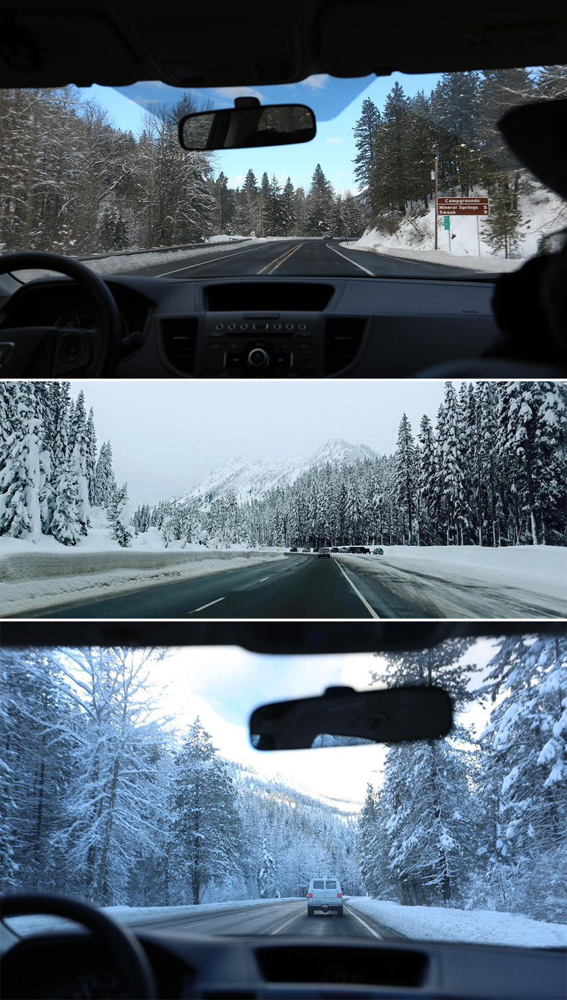
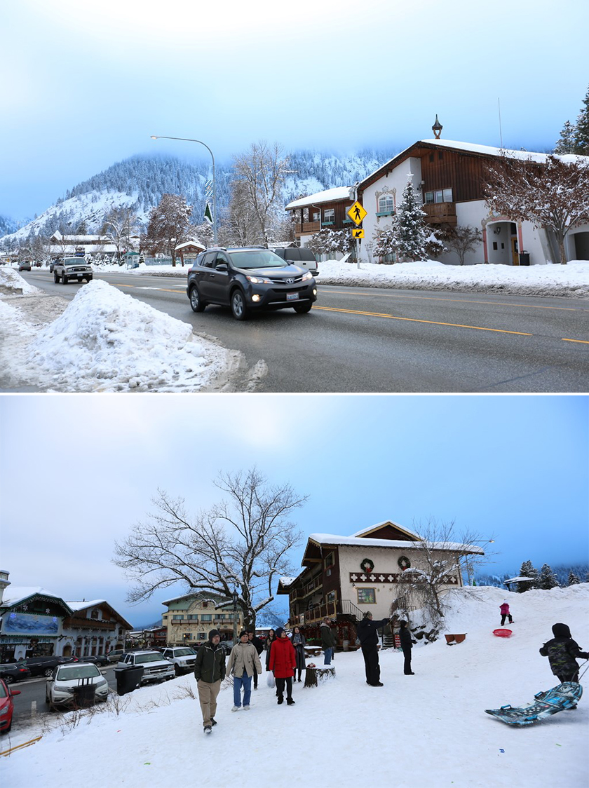
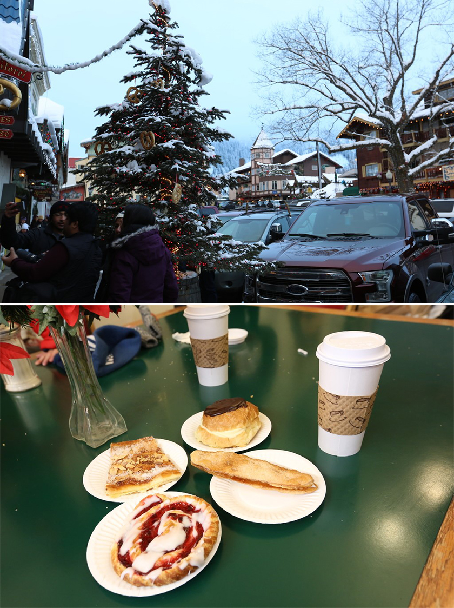
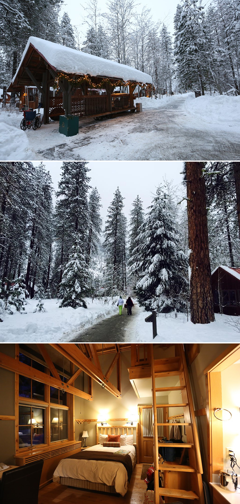
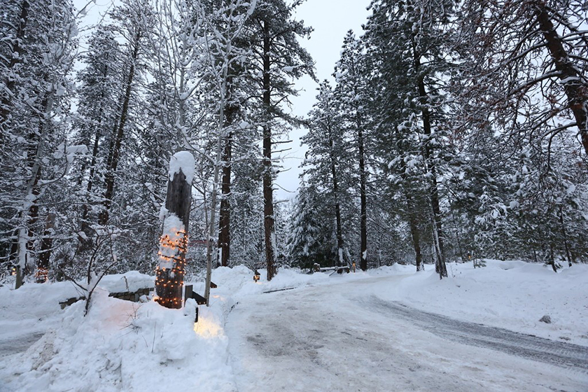
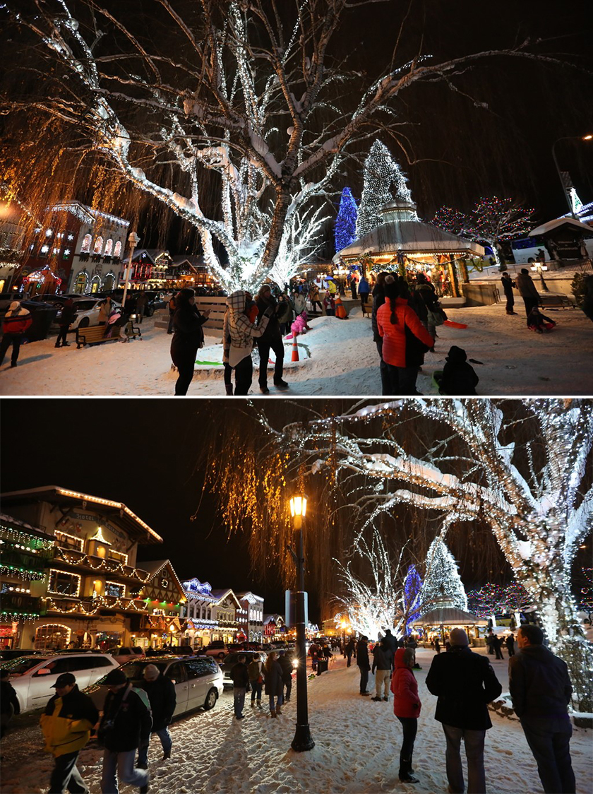
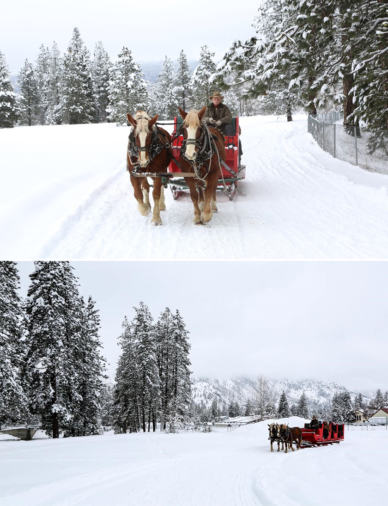
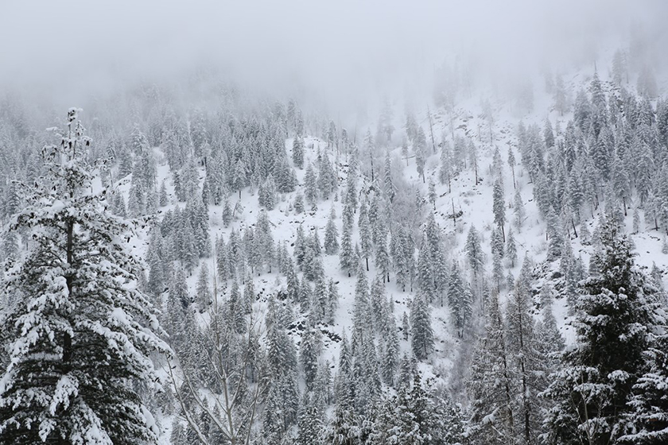

|  |
每當進入十月天氣開始交替，樹葉和蔬果也依序換上橘紅色新裝，就開始期待通通滿滿的涼爽空氣透進鼻樑，將一身熱氣抖散。我拉出深埋在衣櫃裡的大衣暖褲，雙手敞開迎接秋冬的來臨，特別是滿心期盼著充滿感恩和歡樂歲末節慶的到來。
越是冷冽的天氣彷彿躲在重重衣物下的心更加溫暖。因此哪裡有雪，哪裡越能讓我穿的像頭隨時進入冬眠的熊，就越深得我心。
|  |
這次我們在美國西岸，沿著公路不斷往北開，美好的road trip啟程了。一路上天氣大好，清透的淡藍色天空搭配著潔淨的白雪，這得天獨厚的美景讓人醉心。隨著緯度以及海拔越來越高，車外的風景也逐漸從藍天白雪，轉變成皚皚白雪滿山谷，再轉變成銀白森林世界。每每峰迴路轉，你以爲景色不可能再更美了，但又被更夢幻驚喜的美景迷的神魂顛倒！在歷經了數百次的wow讚嘆聲中，我們終於抵達了華盛頓州的Leavenworth 德國村。
|  |
Leavenworth是個以德國巴伐利亞風格打造的小鎮，從鎮上房屋建築風格，到商店餐廳所提供的服務，都充滿濃濃中古世紀的歐洲風情。冬天是Leavenworth旅遊旺季，尤其越到聖誕節就越熱鬧，所有的張燈結綵和鎮上活動，緊扣著聖誕節氛圍，果真是聖誕節無所不在！
|  |
停好車後，我們隨意走進間麵包店先暖暖胃。外面天氣寒冷，我們窩在室內喝咖啡吃甜食，一邊呼著熱氣，一邊望向窗外被白雪覆蓋住的屋頂和大樹，享受這單純的幸福快樂。身體都暖和後，我們在鎮上散散步，路旁隨處可見拿著雪盆的孩子，在公園滑來滑去，歡笑聲此起彼落的，這就是聖誕節對我的意義！跟心愛的家人相互陪伴，大家聚在一起聊天共度美好時光，沒有什麼比這個更讓人滿足的了！
|  |
不久後，我們再度上車，驅車前往下榻的飯店sleeping lady。Sleeping lady位處森林中，佔地不小，是一間美到會讓人流連忘返的飯店。我們check-in拿了鑰匙後，跟著路標找到了今晚住的小木屋。沿路的積雪又多又厚，有些早已積了半公尺高，連小木屋的幾扇窗戶都被白雪堵住無法開啟，我們開心的一邊玩著雪，玩到用餐時間到了才前往飯店內的餐廳享用晚餐。
|  |
這邊天黑的早，才傍晚四周已經一片黑暗，我們沿著路旁的小燈找到了餐廳的方向。餐廳周圍掛起了聖誕燈，引領我們在冷冽的天氣中奮力的向前邁進，終於，我們抵達了餐廳。餐廳內籠罩著溫馨且愉悅的氛圍，溫暖了我們的心，一坐下後來才發現早已飢腸轆轆，上了菜後還來不及好好拍照，大家迫不及待開始享用，一口接著一口直呼好好吃，清空眼前滿桌佳餚，我們滿足的拍拍肚子，靜靜的欣賞餐廳裡播放的音樂。今晚沒有酒精的加持，但大家聽著聽著彷彿也都有些微醺。
|  |
飽食後，我們再度前往德國村，跟著剛吃完晚餐的遊客和鎮民一起散步一起玩路旁的積雪。公園裡有幾棵漂亮的大聖誕樹，而中間則圍著一個大亭子，上面站滿了唱詩歌報佳音的大人小孩，我們也隨意的跟著哼著幾句～Oh, what a wonderful night tonight!
|  |
隔天清晨，早早就爬起在森林小徑中健行，昨晚剛下了一陣雪，新下的雪白的特別美麗，因此雖然頭頂耳朵鼻子都被冷空氣凍得紅滋滋的，仍然捨不得離開，想把這麼美好的光景一股腦的收進回憶裡。
離開飯店後，我們前往近郊體驗搭雪橇。搭雪橇處是在一個山谷的空地，四周則是由白雪和蒼鬱樹枝互相輝映的森林，如詩如畫～我們搭乘由馬拉程的雪橇前進，跟其他十幾位的旅客，一起享受雪橇滑行在雪地上及穿梭在森林裡的樂趣，大家一邊開心閒聊一邊驚呼身旁美景，即便是一片白茫茫的景色，也因為地貌不同而有各種變化。
|  |
雖然搭雪橇只有短短十幾分鐘的體驗，還是覺得相當有趣，尤其是看到過去只在想像中的景色從故事書中跳了出來，重現在眼前，而我們彷彿住進了書中的世界裡，沒有什麼比這更怦然心動的了！
Leavenworth 真是一個夢幻的小鎮，帶著小鎮送給我們滿滿甜蜜的回憶，我們即將告別，我跟自己承諾，下次還要帶著心愛的家人再來！再見！再見！
|  |